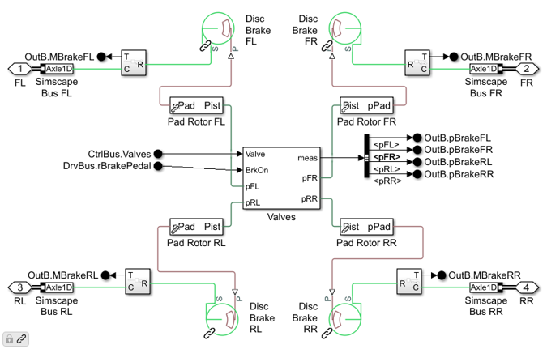
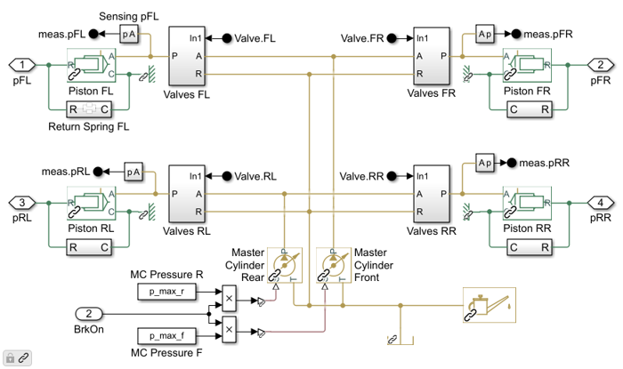

Brakes, ABS 4 Channel
This subsystem models the brakes for all four corners of the vehicle, The pressure applied to the brake is controlled by pressure at the master cylinder and commands to the apply and release valves at each corner.
Contents
Overview
The ABS 4 Channel variant of the brake subsystem has:
- Simscape Bus connections for each corner
- Input signal bus for the control of the braking system (valve control)
- Input signal bus for inputs from the driver (brake pedal displacement)

Model
The brake caliper and pads are modeled using the Disc Brake block from Simscape Driveline. The actuators are hydraulic cylinders with valves to control the flow of fluid between the master cylinder and the brake caliper.
The control signal to each actuator are the signals to the apply and release valves. This permits the controller to apply, hold, and release pressure at each wheel. This basic function is required for most anti-lock braking systems.
The input signal from the driver is the amount that the brake pedal is depressed. This signal varies from 0 to 1.
Hydraulic
A very basic hydraulic system is implemented using ideal pressure sources for the master cylinder pressure.
